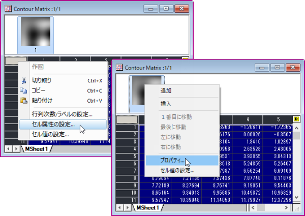

行列プロパティダイアログボックスは、行列オブジェクトの内部データ型、表示フォーマット、桁表示を設定します。 つまり、行列シート内の各オブジェクトは、例えば、異なるデータ型(メモリアロケーションを決める)や異なるフォーマットでの数値表示にすることができます。
「行列プロパティ」ダイアログボックスを開く方法
行列ウィンドウをアクティブにし、メニューから行列：セル属性の設定を選択します。
または、
行列表の左上をクリックして、セル属性の設定を選択するか、ウィンドウ上部のサムネイルを右クリックしてプロパティ...を選択します。

文字数を単位にしてセル幅を指定します。
表示ドロップダウンリストを使って、十進数、工学、科学の表示形式を選択します。
| オプション | 説明 |
|---|---|
| 十進数:1000 |
1, 1000, 1E6, 1E9 † 指数表記への表記変更の契機となるしきい値は、｢オプション｣ダイアログボックス（環境設定：オプション）の数値の表現形式タブ内で指定します。 |
| 科学的:1E3 |
1E0, 1E3, 1E6, 1E9 |
| 工学:1k |
1.0, 1.0k, 1.0M, 1.0G Originは以下の工学データサフィックスをサポートしています: 下記の表をご覧下さい。 |
| 十進数:1,000 |
1, 1,000, 1E6, 1E9 指数表記への表記変更の契機となるしきい値は、｢オプション｣ダイアログボックス（環境設定：オプション）の数値の表現形式タブ内で指定します。 |
| 接尾辞 | 意味 | 大きさ |
|---|---|---|
| k | kilo | 10^3 |
| M | mega | 10^6 |
| G | giga | 10^9 |
| T | tera | 10^12 |
| P | peta | 10^15 |
| m | milli | 10^-3 |
| u | micro | 10^-6 |
| n | nano | 10^-9 |
| p | pico | 10^-12 |
| f | femto | 10^-15 |
|
Note: 「u」は、Originのマイクロに対する普遍的な表記です。 例外は、グラフの軸目盛ラベルです。これには「mu」を使います。 Origin 7 では、接尾語として、Eおよびaをサポートしていません。 |
この『桁数指定法』ドロップダウンリストで『デフォルト桁数』を選択すると、｢オプション｣ダイアログ(｢環境設定：オプション｣)の『数値の表現形式』タブの『小数点以下の桁数』コンボボックスで指定した桁数が適用されます。
ここで、『小数桁数』を選択すると、小数点以下の桁数を制御することができます。(｢オプション｣ダイアログの『数値の表現形式』タブの『小数点以下の桁数』コンボボックスで指定した桁数は無視されます。) 「桁数」テキストボックスに小数点以下の桁数(n)を指定します。 ここに入力する値は、小数点以下の最大の桁数を入力します。 もし桁数欄を空白にしておくと、標準値として5 (倍精度実数の場合) が使われます。
ここで、『有効桁数』を選択すると、数値全体の有効桁数を制御することができます。 右に現れる桁数欄に有効桁数を指定します。
Double型は欠損値をサポートする唯一のデータ型で、これは曲線フィットや高い精度が必要な数学演算に使用することをお勧めします。
| データ型 | バイト長 | 値の範囲 |
|---|---|---|
|
double (デフォルト) |
8 |
±1.7E±308 (15ケタ) |
|
実数 |
4 |
±3.4E±38 (7ケタ) |
|
short |
2 |
-32,768 to 32,767 |
|
long |
4 |
-2,147,483,648 to 2,147,483,647 |
|
char |
1 |
-128 to 127 |
|
byte |
1 |
0 to 255 |
|
ushort |
2 |
0 to 65,535 |
|
ulong |
4 |
0 to 4,294,967,295 |
|
複素数 |
16 |
±1.7E±308 (15ケタ)、それぞれ8バイト |
現行列オブジェクトより右側にある同じシート内の全行列オブジェクトに対して、オプションの設定を同じように適用する場合にチェックします。